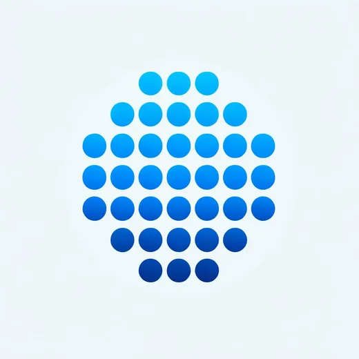

Künstliche Intelligenz ist kein neues Thema. Schon 1950 stellt Alan Turing in seinem Aufsatz Computing Machinery and Intelligence [1] den später nach ihm benannten Turing-Test vor. Kein Jahrzehnt später folgen die ersten neuronalen Netze [2].
I propose to consider the question, “Can machines think?”
Es dauert wiederum einige Jahrzehnte, bis 2017 die Grundlagen für große Sprachmodelle (Large Language Models, LLMs) gelegt werden [3]. Weil sie natürliche Sprache so gut verarbeiten, sind LLMs sehr vielseitig einsetzbar. Man muss weder KI-Spezialist noch Informatiker sein, um mit ihnen zu arbeiten: Ein LLM stellt kaum Anforderungen an die Eingabe und erfasst ihre Bedeutung erstaunlich gut.
Daraus ergeben sich drei Fragen, und sie geben diesem Artikel seine drei Teile: Wie funktioniert so ein Modell? Welche Begriffe braucht man, um darüber zu sprechen — bis hin zu Agenten und Harnesses? Und wo können wir es in der Softwareentwicklung produktiv einsetzen, mit Modellen?
01Wie ein LLM funktioniert
Ein LLM ist ein neuronales Netz, das eine Sache außerordentlich gut gelernt hat: einen Text fortzusetzen. Alles andere — antworten, übersetzen, Code schreiben — folgt daraus.
Wie ein neuronales Netz entscheidet
Die Grundlage jedes LLMs ist ein neuronales Netz. Am einfachsten sieht man die Idee an einem Bild: Ist das ein Hund oder eine Katze? Das Netz sieht keinen Hund, nur Pixelwerte. Jeder Pixel ist eine Eingabe; jede Eingabe ist über ein Gewicht mit Neuronen verbunden; jedes Neuron summiert seine gewichteten Eingaben und gibt das Ergebnis über eine Aktivierungsfunktion an die nächste Schicht weiter. Am Ende konkurrieren zwei Ausgabeneuronen — „Hund“ und „Katze“. Beim Training werden die Gewichte über viele Beispiele so angepasst, bis das richtige Neuron gewinnt.
Zum Vergleich: Der Fadenwurm C. elegans kommt mit 302 Neuronen und rund 7.000 synaptischen Verbindungen aus. GPT-3 hat 175 Milliarden Gewichte [8]; aktuelle LLMs liegen in der Größenordnung von einer Billion.
Für Neugierige
- Wie sich die Gewichte bewegen. Nach jedem Beispiel vergleicht das Netz seine Ausgabe mit der richtigen Antwort. Backpropagation rechnet Schicht für Schicht von hinten aus, wie viel jedes Gewicht zum Fehler beigetragen hat [13]; dann wird jedes Gewicht ein winziges Stück in die Richtung verschoben, die den Fehler kleiner macht (Gradientenabstieg). Das Ganze milliardenfach.
- Pre-Training. Ein LLM braucht keine beschrifteten Bilder: Die richtige Antwort ist einfach das nächste Token eines echten Textes. Deshalb kann es aus fast allem lernen, was je geschrieben wurde [5].
- Vom Textfortsetzer zum Assistenten. Ein vortrainiertes Modell setzt nur Text fort. Chat-Modelle bekommen eine zweite Phase: Menschen bewerten Antworten, ein Belohnungsmodell lernt diese Vorlieben, und das LLM wird darauf hin angepasst (RLHF). In der InstructGPT-Studie zogen Menschen die Antworten eines so angepassten Modells mit 1,3 Milliarden Gewichten denen von GPT-3 mit 175 Milliarden vor [14].
Generative KI und der Transformer
Generative KI meint Systeme, die darauf trainiert sind, Inhalte zu erzeugen, die von menschlichen kaum zu unterscheiden sind — Texte, Bilder, Musik und sogar Code. Beispiele sind GPT-4 (Generative Pretrained Transformer) für Text, DALL-E für Bilder und Codex für die Programmierung. Sie alle beruhen auf der Transformer-Architektur.
Zwei Aspekte sind ausschlaggebend. Erstens wird das neuronale Netz so auf Texten trainiert, dass es nicht nur die Position der Wörter erfasst, sondern auch ihren Bezug zueinander. Dadurch kann ein GPT Bezüge auflösen — auch implizite:
Der zweite Aspekt ist der schiere Umfang des Trainings. LLMs werden auf enormen Datenmengen trainiert und verarbeiten die Nuancen menschlicher Sprache deshalb sehr gut. Eingaben dürfen grammatikalisch ungenau, voller Rechtschreibfehler und umgangssprachlich sein — das Modell kennt all das aus seinen Trainingsdaten.
Für Neugierige
- Was Attention berechnet. Jedes Token wird in drei Vektoren übersetzt: eine Query (wonach suche ich?), einen Key (was biete ich an?) und einen Value (was gebe ich weiter?). Ein Token vergleicht seine Query mit den Keys aller früheren Tokens; je besser sie passen, desto mehr von deren Value nimmt es auf [3]. So findet „sie“ die „Kutsche“.
- Viele Köpfe, viele Schichten. Mehrere solcher Attention-„Köpfe“ arbeiten nebeneinander, jeder kann eine andere Art von Bezug lernen, und die Schichten sind gestapelt — 96 bei GPT-3, jede 12.288 Zahlen breit [5].
- Das Kontextfenster. Weil jedes Token auf jedes frühere schaut, wächst der Aufwand mit dem Quadrat der Textlänge [3]. Ein Modell liest deshalb nur eine begrenzte Zahl von Tokens auf einmal — 2.048 bei GPT-3 [5], Hunderttausende bei aktuellen Modellen. Was nicht hineinpasst, sieht das Modell nicht.
Token für Token
Um eine Antwort zu erzeugen, macht ein GPT immer wieder nur eines: Zum bisherigen Text berechnet es, wie wahrscheinlich jedes mögliche nächste Wort ist — genauer: das nächste Textelement, ein Token. Eines wird gezogen, angehängt, und der ganze Text geht erneut hinein [8]:
System: Du bist ein hilfreicher Chatbot!
Nutzer: Was ist die Hauptstadt von Frankreich?
Assistent:
↺ das gezogene Token wird angehängt — und der ganze Text geht erneut hineinWarum nicht immer das wahrscheinlichste Token? Weil der Text dann, wie Stephen Wolfram beobachtet, eher flach und repetitiv wird; ein wenig Zufall macht ihn lebendiger [8]. Der Preis: Derselbe Prompt kann unterschiedliche Antworten liefern. GPTs sind deshalb weder transparent — man kann nicht nachvollziehen, wie eine Ausgabe zustande kam — noch deterministisch.
Für Neugierige
- Woher die Tokens kommen. Das Vokabular entwirft niemand von Hand. Byte-Pair-Encoding beginnt mit einzelnen Zeichen und verschmilzt immer wieder das häufigste benachbarte Paar zu einem neuen Token [15]. Häufige Wörter werden ein Token, seltene mehrere Stücke. Deshalb tun sich LLMs auch schwer, Buchstaben zu zählen: Sie sehen die Buchstaben nie.
- Temperatur. Eigentlich gibt das Modell pro Token einen Wert aus; die Wahrscheinlichkeiten entstehen daraus per Softmax, nachdem jeder Wert durch die Temperatur geteilt wurde. Unter 1 werden die wahrscheinlichen Tokens noch wahrscheinlicher; über 1 wird die Verteilung flacher, und seltene Tokens bekommen eine Chance. Bei Temperatur 0 wird immer das wahrscheinlichste Token genommen.
- Top-k und Top-p. Die meisten Systeme schneiden vor dem Ziehen außerdem den langen Schwanz ab: nur die k besten Tokens, oder nur die kleinste Menge, deren Wahrscheinlichkeiten zusammen p ergeben („Nucleus Sampling“) [16]. So bleibt die Vielfalt des Ziehens, ohne gelegentliches absurdes Token.
Halluzinationen
LLMs beruhen auf einem stochastischen Modell. Ein LLM gibt deshalb nicht zwingend die korrekte Antwort, sondern die plausibelste. Solange die gefragte Information innerhalb der Trainingsdaten liegt, ist die plausibelste Antwort oft auch die richtige; je weiter man sich aber außerhalb der Trainingsdaten bewegt, desto wahrscheinlicher präsentiert das LLM eine falsche Antwort sehr plausibel.
Halluzinationen sind schwer zu erkennen, weil sie sich kaum von korrekten Aussagen unterscheiden: Sie passen immer gut in den Kontext der Frage und enthalten selten offensichtliche Fehler. Das folgende Beispiel zeigt einen Fehler, den ein Mensch sofort sieht — das Modell nicht. Nichts an der Antwort verrät ihre Unsicherheit.

Genauso brüchig ist das Schlussfolgern. „Alice hat 5 Schwestern und 3 Brüder. Wie viele Schwestern hat ein Bruder von Alice?“ — aktuelle Modelle beantworteten das nur in einem Bruchteil der Fälle richtig [7]. LLMs imitieren Sprache sehr gut, haben aber selbst kein Konzept von Logik. Werkzeuge schließen einen Teil der Lücke: Code-Interpreter, Function Calls, APIs. Ein LLM, das solche Werkzeuge in einer Schleife einsetzt, nennt man Agent.
Für Neugierige
Warum sagt ein Modell nicht einfach „Weiß ich nicht“? Eine Antwort: Training und Bewertung belohnen das Raten. In einem Test, der richtige Antworten zählt und für „Weiß ich nicht“ nichts gibt, ist Raten immer die bessere Wette — für Studierende in der Klausur wie für Sprachmodelle im Benchmark. Kalai et al. argumentieren, dass Halluzinationen genau daraus folgen und dass es für weniger davon eine andere Bewertung braucht: Falsche Antworten müssen mehr kosten als ein ehrliches „Weiß ich nicht“ [17]. Die 17 Punkte zeigen eine zweite Ursache: Bildmodell und Sprachmodell sind getrennt, und das Sprachmodell schaut nicht nach, was tatsächlich gezeichnet wurde.
02Grundbegriffe
Gespräche über KI füllen sich schnell mit Begriffen. Hier sind die, die man braucht — vom Sammelbegriff bis zu Agenten und Harnesses.
KI ist ein Sammelbegriff
„Künstliche Intelligenz“ ist ein sehr allgemeiner und unscharf definierter Überbegriff. Neben neuronalen Netzen werden auch einfache Entscheidungsbäume gern als KI bezeichnet. Machine Learning grenzt das auf Algorithmen ein, die aus Daten lernen; Deep Learning auf solche, die neuronale Netze nutzen; generative KI auf Systeme, die neue Inhalte erzeugen. Große Sprachmodelle sind der innerste Kreis — und um den geht es in diesem Artikel.
Begriffe rund um das Modell
- Token
- Ein Stück Text, das das Modell liest und schreibt: ein Wort, ein Wortteil oder ein Satzzeichen. GPT-3 kennt rund 50.000 verschiedene Tokens; nur einige Tausend davon sind ganze Wörter [8].
- Prompt
- Alles, was das Modell als Eingabe bekommt: die Anweisungen (System-Prompt), das bisherige Gespräch, angehängte Dokumente.
- Kontextfenster
- Wie viele Tokens das Modell auf einmal aufnehmen kann. Was nicht hineinpasst, sieht es nicht.
- Temperatur
- Wie mutig das nächste Token gewählt wird. Bei 0 immer das wahrscheinlichste; höhere Werte bringen Abwechslung — und mehr Fehler.
- Few-shot
- Beispiele für Fragen und Antworten im Prompt, die dem Modell zeigen, was gewünscht ist — ohne es neu zu trainieren.
- Fine-tuning
- Ein bestehendes Modell auf eigenen Daten weitertrainieren. Braucht gute Daten und Hardware, und das Ergebnis steht fest bis zum nächsten Training.
Embeddings
Im Inneren arbeitet ein LLM nicht mit Wörtern, sondern mit Vektoren — langen Zahlenlisten. Diese Embeddings werden so gelernt, dass Wörter und Texte mit ähnlicher Bedeutung nah beieinander landen, in einer Art Bedeutungsraum [8]:
Das ermöglicht semantische Suche: Nutzer umschreiben ihr Problem und erhalten passende Inhalte, ohne wissen zu müssen, nach welchen Begriffen sie suchen müssten.
Für Neugierige
- Wie viele Dimensionen? Die Abbildung hat zwei; echte Embeddings haben Hunderte bis Tausende — GPT-3 arbeitet mit 12.288 Zahlen pro Token [5]. Niemand hat festgelegt, was jede Zahl bedeutet; die Achsen sind, was das Training nützlich fand.
- Nah heißt ähnlich. Nähe misst man meist als Winkel zwischen zwei Vektoren (Kosinus-Ähnlichkeit), nicht als Abstand — ein langer und ein kurzer Text zum selben Thema zeigen in dieselbe Richtung.
- Rechnen mit Bedeutung. Richtungen im Raum können Bedeutung tragen. In Wort-Embeddings von 2013 lag der Vektor king minus man plus woman am nächsten an queen [18].
Retrieval-augmented generation (RAG)
Ein LLM weiß nur, was in seinen Trainingsdaten stand. Damit es aus eigenen Dokumenten antwortet, trainiert man es nicht neu — man sucht zuerst und gibt ihm, was man gefunden hat. Zusammen mit semantischer Suche ergibt das Retrieval-Augmented Generation:
Für Neugierige
- Vor der ersten Frage. Die Dokumente werden in Abschnitte von ein paar Absätzen zerlegt, jeder Abschnitt wird in ein Embedding übersetzt, und die Embeddings kommen in einen Vektorindex.
- Bei jeder Frage. Die Frage wird genauso eingebettet; der Index liefert die nächstgelegenen Abschnitte; sie werden in den Prompt kopiert, zusammen mit der Anweisung, daraus zu antworten und die Quelle zu nennen. Name und Idee gehen auf Lewis et al. zurück [20].
- Wo es schiefgeht. Meist bei der Suche, nicht beim Modell: Abschnitte an der falschen Stelle geschnitten, eine Frage mit anderen Wörtern als die Dokumente, eine Tabelle, die ihre Struktur verliert. Viele Systeme kombinieren deshalb semantische Suche mit einfacher Stichwortsuche und lassen ein zweites Modell die Treffer neu sortieren.
Was ist ein Agent?
Ein KI-Agent ist ein Sprachmodell, das in einer Schleife Werkzeuge einsetzt, um ein Ziel zu erreichen — und dabei selbst entscheidet, welcher Schritt als Nächstes kommt.
Ein Chatbot beantwortet eine Frage und hört auf. Ein Agent bekommt ein Ziel, plant, handelt — liest eine Datei, sucht im Web, ändert Code —, betrachtet das Ergebnis und entscheidet, was als Nächstes zu tun ist, bis das Ziel erreicht ist. Simon Willison fasst das in einem Satz: „An LLM agent runs tools in a loop to achieve a goal.“ [10]
Anthropic grenzt Agenten von Workflows ab: Im Workflow folgen LLMs und Werkzeuge Pfaden, die ein Programmierer vorher festgelegt hat; im Agenten steuert das LLM seinen Ablauf und seinen Werkzeuggebrauch selbst [9]. Das macht Agenten flexibel — und schwerer vorherzusagen.
Was ist ein Harness?
Ein Harness ist die gesamte Software rund um ein Sprachmodell, die daraus einen arbeitsfähigen Agenten macht — alles am Agenten außer dem Modell selbst.
Das Wort kommt vom Geschirr eines Pferdes. Das Pferd bringt die Kraft, aber erst das Geschirr — Kummet, Zügel, der Wagen dahinter — macht daraus gelenkte, nützliche Arbeit. Ein Sprachmodell allein kann nur Text in Text verwandeln. Der Harness führt die Schleife aus Kontext sammeln, handeln, Ergebnis prüfen und weitermachen, und stellt drumherum bereit:
- Anweisungen — den System-Prompt und die Regeln des Projekts,
- Werkzeuge — Dateien, ein Terminal, einen Browser, Websuche,
- Kontext und Gedächtnis — was das Modell zu sehen bekommt, zusammengefasst, wenn das Kontextfenster voll wird,
- Leitplanken — Berechtigungen, eine Sandbox, was die Freigabe eines Menschen braucht,
- Prüfungen — Tests, Linter, Parser, die dem Modell sagen, wann es danebenlag.
Daher die kurze Formel: Agent = Modell + Harness [12]. Claude Code, Codex und Cursor sind Harnesses. Ein Teil des Harness ist eingebaut; Teams ergänzen ihren eigenen — Projektregeln, zusätzliche Werkzeuge, eigene Prüfungen. Birgitta Böckeler teilt diese Ergänzungen in Guides, die den Agenten steuern, bevor er handelt, und Sensoren, die danach beobachten und ihm helfen, sich selbst zu korrigieren [11].
Für alle, die mit KI bauen, ist das die praktische Lehre: Vieles, was einen Agenten gut oder schlecht macht, steckt im Harness, nicht im Modell. ESACA, das Projekt, an dem ich arbeite, ist so ein Harness für Unternehmen — Coding-Agenten innerhalb der eigenen Infrastruktur. Und das nächste Kapitel zeigt zwei Harness-Bausteine für Modelle: einen Parser als Sensor, eine Grammatik als Guide.
03LLMs und modellgetriebene Entwicklung
Softwareentwicklung ist eine komplexe Disziplin mit vielen Einstiegshürden: Programmierkenntnisse, Erfahrung in der Systemmodellierung, Domänenwissen und viel Abstimmung zwischen den Stakeholdern der zu entwickelnden Plattform. Generative KI kann uns schon heute Teile dieser Arbeit abnehmen und die Entwicklung beschleunigen [4]. Assistenten wie GitHub Copilot unterstützen Programmierer beim Schreiben von Teilen des Quellcodes. Deutlich weniger Ansätze befassen sich mit der Modellierung und Generierung ganzer Systeme.
Generative Methoden können aus textuellen Modellen Systeme oder Teile davon erzeugen: Ein Generator liest ein Modell und erzeugt daraus Quellcode. Je nachdem, wofür der Code gedacht ist, passen unterschiedliche Modellierungssprachen — Klassendiagramme für Datenstrukturen, Sequenzdiagramme für Abläufe. Was Modelle, DSLs und Generatoren sind, erklärt Teil 1 dieser Reihe.
Sprachmodelle, die Modelle schreiben
Gute Modelle zu definieren erfordert Vorwissen: über Modellierungskonzepte, über die Syntax der Modellierungssprache und über den Anwendungsfall. LLMs können vor allem bei den ersten beiden helfen. Mit Prompt Engineering können wir einem LLM eine Modellierungssprache beibringen [BDMN+24] [NMR24] — mit einer Kombination aus Few-Shot-Learning [5], Retrieval-Augmented Generation [6] und Instruktionen, die natürlichsprachliche Eingaben in ein textuelles Modell in der Sprache unserer Wahl übersetzen.
classdiagram HundehüttenModell {
class Hundehütte {
String standort;
double breite;
double länge;
double höhe;
}
class Hund {
String name;
String rasse;
int alter;
}
association [1] Hundehütte -> (bewohner) Hund [*];
}Probieren Sie die Assistenten selbst aus:
- CD4A Class Diagram Creator ↗Klassendiagramme in CD4A
- GUI-DSL2 Model Creator ↗Seitenmodelle in GUI-DSL 2
- SysML v2 Model Creator ↗SysML-v2-Modelle
- MontiCore Expert ↗Fragen zu MontiCore
LLMs, die auf eine Modellierungssprache angepasst sind, können mehr als neue Modelle erstellen: Sie können bestehende Modelle anpassen oder ein Modell aus einem Bild extrahieren. Ein am Whiteboard skizziertes Modell lässt sich fotografieren und in die passende Syntax überführen.
Verlässlich wird das erst durch das, was nach dem LLM passiert. Ein Parser prüft jedes Modell; ein ungültiges geht mit der Fehlermeldung zurück:
Constrained Decoding: Grammar Masking
Noch besser ist es, ungültige Modelle gar nicht erst entstehen zu lassen. Ein LLM schreibt Token für Token — also kann die Grammatik der Modellierungssprache bei jedem Schritt die Kandidaten filtern, bevor eines gewählt wird. Das ist Grammar Masking [NRR24]:
| Modell | ohne | mit Masking | Zeit pro Modell |
|---|---|---|---|
| Llama 3 8B · 4-bit | 42,0 % | 92,6 % | 5,7 s → 74,1 s |
| Phi-3 Mini · 4-bit | 36,6 % | 87,0 % | 4,6 s → 138,3 s |
| Gemma 7B · 4-bit | 0,3 % | 93,0 % | 2,5 s → 54,2 s |
| Mistral 7B · 3-bit | 21,0 % | 92,4 % | 4,9 s → 73,6 s |
Kleine, lokal laufende offene Modelle liefern dann in mehr als neun von zehn Fällen gültige Modelle — statt zwischen fast nie und vier von zehn Mal. Der Preis ist die Laufzeit. Masking braucht Zugriff auf die Token-Wahrscheinlichkeiten; deshalb funktioniert es mit offenen Modellen auf der eigenen Hardware.
Für Neugierige
- Warum es eine Garantie ist. Ein Parser danach kann nur ablehnen; die Maske entscheidet vorher. Wenn jedes gewählte Token den Text als gültigen Anfang eines Modells erhält und das Modell nur aufhören darf, wenn der Text vollständig ist, ist das Ergebnis per Konstruktion syntaktisch gültig — nicht nur wahrscheinlich [NRR24] [19].
- Tokens passen nicht zur Grammatik. Ein Token kann ein halbes Schlüsselwort enthalten, oder eine Klammer plus Leerzeichen plus den nächsten Namen. Die Maske kann deshalb nicht einfach Grammatiksymbole nachschlagen; sie prüft für jeden Kandidaten, ob seine Zeichen den bisherigen Text fortsetzen können. Das bei jedem Schritt für Zehntausende Tokens schnell zu tun, ist der Ingenieursteil.
- Syntax, nicht Bedeutung. Die Maske sorgt dafür, dass das Modell parst. Ob die Klassen die richtigen sind oder eine referenzierte Klasse überhaupt existiert, braucht weiter Prüfungen danach — und das Modell kann in gültigen, aber ungeschickten Text gedrängt werden, wenn es eigentlich etwas anderes „wollte“.
- Gehostete Modelle. Mehrere API-Anbieter bieten inzwischen eine engere Form auf ihrer Seite an: Ausgaben, die garantiert einem JSON-Schema folgen.
Vom Satz zur Anwendung
Zusammen mit modellgetriebener Softwareentwicklung reicht das bis zum Ende: Nutzer beschreiben ihre Domäne informell, ein LLM leitet daraus Klassendiagramme ab, und ein Generator wie MontiGem macht daraus ein vollständiges Informationssystem [NMR24] [Net24].
Modelle helfen weit über die Generierung von Software-Artefakten hinaus. Anforderungen lassen sich aus natürlicher Sprache in eine formale, vom Computer analysierbare Sprache übersetzen; dort gefundene Widersprüche und Redundanzen kann ein LLM wieder in natürliche Sprache zurückübersetzen. Und weil sich ein generiertes Modell analysieren und prüfen lässt, lassen sich viele Fehlerquellen ausschließen, bevor auch nur eine Zeile Code existiert [NKR+25].
Kurz gesagt
KI kann einen Entwickler noch nicht ersetzen; sie ist am besten als Werkzeug zu verstehen, das den Entwicklungsprozess beschleunigt. Alles, was sie erzeugt, braucht Prüfung und Validierung — blind einsetzen lässt sie sich nicht. Diese Prüfung gehört in den Harness, und wo KI auf Modelle trifft, wird sie möglich: Das Modell ist die Stelle, an der aus Sprache etwas wird, das eine Maschine verifizieren kann.
Literatur
- A. M. Turing: Computing Machinery and Intelligence. Mind 59(236), 433–460 (1950).
- F. Rosenblatt: The perceptron: a probabilistic model for information storage and organization in the brain. Psychological Review 65(6), 386–408 (1958).
- A. Vaswani et al.: Attention is all you need. Advances in Neural Information Processing Systems 30 (2017).
- S. Barke, M. B. James, N. Polikarpova: Grounded Copilot: How programmers interact with code-generating models. arXiv:2206.15000 (2022).
- T. Brown et al.: Language models are few-shot learners. Advances in Neural Information Processing Systems 33, 1877–1901 (2020).
- G. Izacard et al.: Few-shot learning with retrieval augmented language models. arXiv:2208.03299 (2022).
- M. Nezhurina, L. Cipolina-Kun, M. Cherti, J. Jitsev: Alice in Wonderland: Simple tasks showing complete reasoning breakdown in state-of-the-art large language models. arXiv:2406.02061 (2024).
- S. Wolfram: What Is ChatGPT Doing … and Why Does It Work? Stephen Wolfram Writings (2023). ↗
- E. Schluntz, B. Zhang: Building effective agents. Anthropic Engineering (2024). ↗
- S. Willison: on the definition of “agent”. simonwillison.net (2025). ↗
- B. Böckeler: Harness engineering for coding agent users. martinfowler.com. ↗
- V. Trivedy: The Anatomy of an Agent Harness. LangChain Blog (2026). ↗
- D. E. Rumelhart, G. E. Hinton, R. J. Williams: Learning representations by back-propagating errors. Nature 323, 533–536 (1986).
- L. Ouyang et al.: Training language models to follow instructions with human feedback. Advances in Neural Information Processing Systems 35 (2022).
- R. Sennrich, B. Haddow, A. Birch: Neural machine translation of rare words with subword units. Proc. ACL, 1715–1725 (2016).
- A. Holtzman, J. Buys, L. Du, M. Forbes, Y. Choi: The curious case of neural text degeneration. ICLR (2020).
- A. T. Kalai, O. Nachum, S. S. Vempala, E. Zhang: Why language models hallucinate. arXiv:2509.04664 (2025).
- T. Mikolov, W. Yih, G. Zweig: Linguistic regularities in continuous space word representations. Proc. NAACL-HLT, 746–751 (2013).
- S. Geng, M. Josifoski, M. Peyrard, R. West: Grammar-constrained decoding for structured NLP tasks without finetuning. Proc. EMNLP (2023).
- P. Lewis et al.: Retrieval-augmented generation for knowledge-intensive NLP tasks. Advances in Neural Information Processing Systems 33 (2020).
- NMR24
- BDMN+24
- NRR24
- Net24
- NKR+25